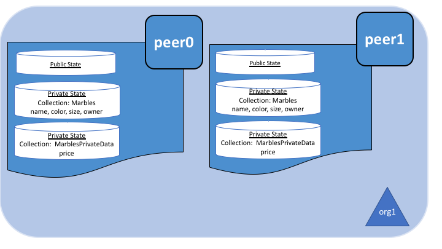
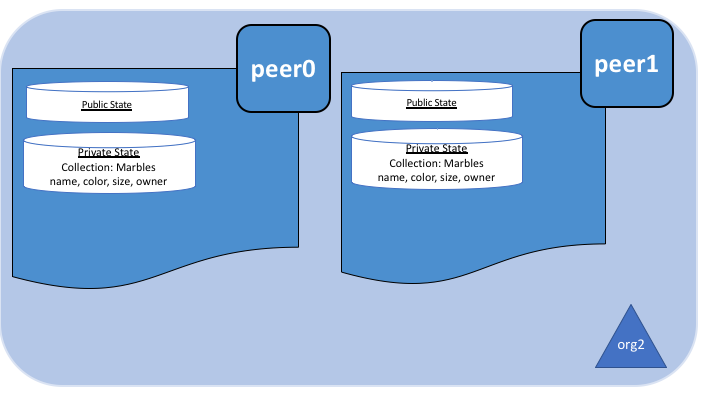

Using Private Data in Fabric¶
This tutorial will demonstrate the use of collections to provide storage and retrieval of private data on the blockchain network for authorized peers of organizations.
The information in this tutorial assumes knowledge of private data stores and their use cases. For more information, check out Private data.
The tutorial will take you through the following steps to practice defining, configuring and using private data with Fabric:
- Build a collection definition JSON file
- Read and Write private data using chaincode APIs
- Install and instantiate chaincode with a collection
- Store private data
- Query the private data as an authorized peer
- Query the private data as an unauthorized peer
- Purge Private Data
- Using indexes with private data
- Additional resources
This tutorial will use the marbles private data sample — running on the Building Your First Network (BYFN) tutorial network — to demonstrate how to create, deploy, and use a collection of private data. The marbles private data sample will be deployed to the Building Your First Network (BYFN) tutorial network. You should have completed the task Install Samples, Binaries and Docker Images; however, running the BYFN tutorial is not a prerequisite for this tutorial. Instead the necessary commands are provided throughout this tutorial to use the network. We will describe what is happening at each step, making it possible to understand the tutorial without actually running the sample.
Build a collection definition JSON file¶
The first step in privatizing data on a channel is to build a collection definition which defines access to the private data.
The collection definition describes who can persist data, how many peers the
data is distributed to, how many peers are required to disseminate the private
data, and how long the private data is persisted in the private database. Later,
we will demonstrate how chaincode APIs PutPrivateData and GetPrivateData
are used to map the collection to the private data being secured.
A collection definition is composed of the following properties:
name: Name of the collection.policy: Defines the organization peers allowed to persist the collection data.requiredPeerCount: Number of peers required to disseminate the private data as a condition of the endorsement of the chaincodemaxPeerCount: For data redundancy purposes, the number of other peers that the current endorsing peer will attempt to distribute the data to. If an endorsing peer goes down, these other peers are available at commit time if there are requests to pull the private data.blockToLive: For very sensitive information such as pricing or personal information, this value represents how long the data should live on the private database in terms of blocks. The data will live for this specified number of blocks on the private database and after that it will get purged, making this data obsolete from the network. To keep private data indefinitely, that is, to never purge private data, set theblockToLiveproperty to0.memberOnlyRead: a value oftrueindicates that peers automatically enforce that only clients belonging to one of the collection member organizations are allowed read access to private data.
To illustrate usage of private data, the marbles private data example contains
two private data collection definitions: collectionMarbles
and collectionMarblePrivateDetails. The policy property in the
collectionMarbles definition allows all members of the channel (Org1 and
Org2) to have the private data in a private database. The
collectionMarblesPrivateDetails collection allows only members of Org1 to
have the private data in their private database.
For more information on building a policy definition refer to the Endorsement policies topic.
// collections_config.json
[
{
"name": "collectionMarbles",
"policy": "OR('Org1MSP.member', 'Org2MSP.member')",
"requiredPeerCount": 0,
"maxPeerCount": 3,
"blockToLive":1000000,
"memberOnlyRead": true
},
{
"name": "collectionMarblePrivateDetails",
"policy": "OR('Org1MSP.member')",
"requiredPeerCount": 0,
"maxPeerCount": 3,
"blockToLive":3,
"memberOnlyRead": true
}
]
The data to be secured by these policies is mapped in chaincode and will be shown later in the tutorial.
This collection definition file is deployed on the channel when its associated chaincode is instantiated on the channel using the peer chaincode instantiate command. More details on this process are provided in Section 3 below.
Read and Write private data using chaincode APIs¶
The next step in understanding how to privatize data on a channel is to build the data definition in the chaincode. The marbles private data sample divides the private data into two separate data definitions according to how the data will be accessed.
// Peers in Org1 and Org2 will have this private data in a side database
type marble struct {
ObjectType string `json:"docType"`
Name string `json:"name"`
Color string `json:"color"`
Size int `json:"size"`
Owner string `json:"owner"`
}
// Only peers in Org1 will have this private data in a side database
type marblePrivateDetails struct {
ObjectType string `json:"docType"`
Name string `json:"name"`
Price int `json:"price"`
}
Specifically access to the private data will be restricted as follows:
name, color, size, and ownerwill be visible to all members of the channel (Org1 and Org2)priceonly visible to members of Org1
Thus two different sets of private data are defined in the marbles private data
sample. The mapping of this data to the collection policy which restricts its
access is controlled by chaincode APIs. Specifically, reading and writing
private data using a collection definition is performed by calling GetPrivateData()
and PutPrivateData(), which can be found here.
The following diagrams illustrate the private data model used by the marbles private data sample.
 
Reading collection data¶
Use the chaincode API GetPrivateData() to query private data in the
database. GetPrivateData() takes two arguments, the collection name
and the data key. Recall the collection collectionMarbles allows members of
Org1 and Org2 to have the private data in a side database, and the collection
collectionMarblePrivateDetails allows only members of Org1 to have the
private data in a side database. For implementation details refer to the
following two marbles private data functions:
- readMarble for querying the values of the
name, color, size and ownerattributes- readMarblePrivateDetails for querying the values of the
priceattribute
When we issue the database queries using the peer commands later in this tutorial, we will call these two functions.
Writing private data¶
Use the chaincode API PutPrivateData() to store the private data
into the private database. The API also requires the name of the collection.
Since the marbles private data sample includes two different collections, it is called
twice in the chaincode:
- Write the private data
name, color, size and ownerusing the collection namedcollectionMarbles. - Write the private data
priceusing the collection namedcollectionMarblePrivateDetails.
For example, in the following snippet of the initMarble function,
PutPrivateData() is called twice, once for each set of private data.
// ==== Create marble object, marshal to JSON, and save to state ====
marble := &marble{
ObjectType: "marble",
Name: marbleInput.Name,
Color: marbleInput.Color,
Size: marbleInput.Size,
Owner: marbleInput.Owner,
}
marbleJSONasBytes, err := json.Marshal(marble)
if err != nil {
return shim.Error(err.Error())
}
// === Save marble to state ===
err = stub.PutPrivateData("collectionMarbles", marbleInput.Name, marbleJSONasBytes)
if err != nil {
return shim.Error(err.Error())
}
// ==== Create marble private details object with price, marshal to JSON, and save to state ====
marblePrivateDetails := &marblePrivateDetails{
ObjectType: "marblePrivateDetails",
Name: marbleInput.Name,
Price: marbleInput.Price,
}
marblePrivateDetailsBytes, err := json.Marshal(marblePrivateDetails)
if err != nil {
return shim.Error(err.Error())
}
err = stub.PutPrivateData("collectionMarblePrivateDetails", marbleInput.Name, marblePrivateDetailsBytes)
if err != nil {
return shim.Error(err.Error())
}
To summarize, the policy definition above for our collection.json
allows all peers in Org1 and Org2 to store and transact
with the marbles private data name, color, size, owner in their
private database. But only peers in Org1 can store and transact with
the price private data in its private database.
As an additional data privacy benefit, since a collection is being used, only the private data hashes go through orderer, not the private data itself, keeping private data confidential from orderer.
Start the network¶
Now we are ready to step through some commands which demonstrate using private data.
Try it yourself
Before installing and instantiating the marbles private data chaincode below, we need to start the BYFN network. For the sake of this tutorial, we want to operate from a known initial state. The following command will kill any active or stale docker containers and remove previously generated artifacts. Therefore let’s run the following command to clean up any previous environments:
cd fabric-samples/first-network ./byfn.sh downIf you’ve already run through this tutorial, you’ll also want to delete the underlying docker containers for the marbles private data chaincode. Let’s run the following commands to clean up previous environments:
docker rm -f $(docker ps -a | awk '($2 ~ /dev-peer.*.marblesp.*/) {print $1}') docker rmi -f $(docker images | awk '($1 ~ /dev-peer.*.marblesp.*/) {print $3}')Start up the BYFN network with CouchDB by running the following command:
./byfn.sh up -c mychannel -s couchdbThis will create a simple Fabric network consisting of a single channel named
mychannelwith two organizations (each maintaining two peer nodes) and an ordering service while using CouchDB as the state database. Either LevelDB or CouchDB may be used with collections. CouchDB was chosen to demonstrate how to use indexes with private data.Note
For collections to work, it is important to have cross organizational gossip configured correctly. Refer to our documentation on Gossip data dissemination protocol, paying particular attention to the section on “anchor peers”. Our tutorial does not focus on gossip given it is already configured in the BYFN sample, but when configuring a channel, the gossip anchors peers are critical to configure for collections to work properly.
Install and instantiate chaincode with a collection¶
Client applications interact with the blockchain ledger through chaincode. As such we need to install and instantiate the chaincode on every peer that will execute and endorse our transactions. Chaincode is installed onto a peer and then instantiated onto the channel using peer-commands.
Install chaincode on all peers¶
As discussed above, the BYFN network includes two organizations, Org1 and Org2, with two peers each. Therefore the chaincode has to be installed on four peers:
- peer0.org1.example.com
- peer1.org1.example.com
- peer0.org2.example.com
- peer1.org2.example.com
Use the peer chaincode install command to install the Marbles chaincode on each peer.
Try it yourself
Assuming you have started the BYFN network, enter the CLI container.
docker exec -it cli bashYour command prompt will change to something similar to:
root@81eac8493633:/opt/gopath/src/github.com/hyperledger/fabric/peer#
Use the following command to install the Marbles chaincode from the git repository onto the peer
peer0.org1.example.comin your BYFN network. (By default, after starting the BYFN network, the active peer is set to:CORE_PEER_ADDRESS=peer0.org1.example.com:7051):peer chaincode install -n marblesp -v 1.0 -p github.com/chaincode/marbles02_private/go/When it is complete you should see something similar to:
install -> INFO 003 Installed remotely response:<status:200 payload:"OK" >Use the CLI to switch the active peer to the second peer in Org1 and install the chaincode. Copy and paste the following entire block of commands into the CLI container and run them.
export CORE_PEER_ADDRESS=peer1.org1.example.com:7051 peer chaincode install -n marblesp -v 1.0 -p github.com/chaincode/marbles02_private/go/Use the CLI to switch to Org2. Copy and paste the following block of commands as a group into the peer container and run them all at once.
export CORE_PEER_LOCALMSPID=Org2MSP export PEER0_ORG2_CA=/opt/gopath/src/github.com/hyperledger/fabric/peer/crypto/peerOrganizations/org2.example.com/peers/peer0.org2.example.com/tls/ca.crt export CORE_PEER_TLS_ROOTCERT_FILE=$PEER0_ORG2_CA export CORE_PEER_MSPCONFIGPATH=/opt/gopath/src/github.com/hyperledger/fabric/peer/crypto/peerOrganizations/org2.example.com/users/Admin@org2.example.com/mspSwitch the active peer to the first peer in Org2 and install the chaincode:
export CORE_PEER_ADDRESS=peer0.org2.example.com:7051 peer chaincode install -n marblesp -v 1.0 -p github.com/chaincode/marbles02_private/go/Switch the active peer to the second peer in org2 and install the chaincode:
export CORE_PEER_ADDRESS=peer1.org2.example.com:7051 peer chaincode install -n marblesp -v 1.0 -p github.com/chaincode/marbles02_private/go/
Instantiate the chaincode on the channel¶
Use the peer chaincode instantiate
command to instantiate the marbles chaincode on a channel. To configure
the chaincode collections on the channel, specify the flag --collections-config
along with the name of the collections JSON file, collections_config.json in our
example.
Try it yourself
Run the following commands to instantiate the marbles private data chaincode on the BYFN channel
mychannel.export ORDERER_CA=/opt/gopath/src/github.com/hyperledger/fabric/peer/crypto/ordererOrganizations/example.com/orderers/orderer.example.com/msp/tlscacerts/tlsca.example.com-cert.pem peer chaincode instantiate -o orderer.example.com:7050 --tls --cafile $ORDERER_CA -C mychannel -n marblesp -v 1.0 -c '{"Args":["init"]}' -P "OR('Org1MSP.member','Org2MSP.member')" --collections-config $GOPATH/src/github.com/chaincode/marbles02_private/collections_config.jsonNote
When specifying the value of the
--collections-configflag, you will need to specify the fully qualified path to the collections_config.json file. For example:--collections-config $GOPATH/src/github.com/chaincode/marbles02_private/collections_config.jsonWhen the instantiation completes successfully you should see something similar to:
[chaincodeCmd] checkChaincodeCmdParams -> INFO 001 Using default escc [chaincodeCmd] checkChaincodeCmdParams -> INFO 002 Using default vscc
Store private data¶
Acting as a member of Org1, who is authorized to transact with all of the private data in the marbles private data sample, switch back to an Org1 peer and submit a request to add a marble:
Try it yourself
Copy and paste the following set of commands to the CLI command line.
export CORE_PEER_ADDRESS=peer0.org1.example.com:7051 export CORE_PEER_LOCALMSPID=Org1MSP export CORE_PEER_TLS_ROOTCERT_FILE=/opt/gopath/src/github.com/hyperledger/fabric/peer/crypto/peerOrganizations/org1.example.com/peers/peer0.org1.example.com/tls/ca.crt export CORE_PEER_MSPCONFIGPATH=/opt/gopath/src/github.com/hyperledger/fabric/peer/crypto/peerOrganizations/org1.example.com/users/Admin@org1.example.com/msp export PEER0_ORG1_CA=/opt/gopath/src/github.com/hyperledger/fabric/peer/crypto/peerOrganizations/org1.example.com/peers/peer0.org1.example.com/tls/ca.crtInvoke the marbles
initMarblefunction which creates a marble with private data — namemarble1owned bytomwith a colorblue, size35and price of99. Recall that private data price will be stored separately from the private data name, owner, color, size. For this reason, theinitMarblefunction calls thePutPrivateData()API twice to persist the private data, once for each collection. Also note that the private data is passed using the--transientflag. Inputs passed as transient data will not be persisted in the transaction in order to keep the data private. Transient data is passed as binary data and therefore when using CLI it must be base64 encoded. We use an environment variable to capture the base64 encoded value, and usetrcommand to strip off the problematic newline characters that linux base64 command adds.export MARBLE=$(echo -n "{\"name\":\"marble1\",\"color\":\"blue\",\"size\":35,\"owner\":\"tom\",\"price\":99}" | base64 | tr -d \\n) peer chaincode invoke -o orderer.example.com:7050 --tls --cafile /opt/gopath/src/github.com/hyperledger/fabric/peer/crypto/ordererOrganizations/example.com/orderers/orderer.example.com/msp/tlscacerts/tlsca.example.com-cert.pem -C mychannel -n marblesp -c '{"Args":["initMarble"]}' --transient "{\"marble\":\"$MARBLE\"}"You should see results similar to:
[chaincodeCmd] chaincodeInvokeOrQuery->INFO 001 Chaincode invoke successful. result: status:200
Query the private data as an authorized peer¶
Our collection definition allows all members of Org1 and Org2
to have the name, color, size, owner private data in their side database,
but only peers in Org1 can have the price private data in their side
database. As an authorized peer in Org1, we will query both sets of private data.
The first query command calls the readMarble function which passes
collectionMarbles as an argument.
// ===============================================
// readMarble - read a marble from chaincode state
// ===============================================
func (t *SimpleChaincode) readMarble(stub shim.ChaincodeStubInterface, args []string) pb.Response {
var name, jsonResp string
var err error
if len(args) != 1 {
return shim.Error("Incorrect number of arguments. Expecting name of the marble to query")
}
name = args[0]
valAsbytes, err := stub.GetPrivateData("collectionMarbles", name) //get the marble from chaincode state
if err != nil {
jsonResp = "{\"Error\":\"Failed to get state for " + name + "\"}"
return shim.Error(jsonResp)
} else if valAsbytes == nil {
jsonResp = "{\"Error\":\"Marble does not exist: " + name + "\"}"
return shim.Error(jsonResp)
}
return shim.Success(valAsbytes)
}
The second query command calls the readMarblePrivateDetails
function which passes collectionMarblePrivateDetails as an argument.
// ===============================================
// readMarblePrivateDetails - read a marble private details from chaincode state
// ===============================================
func (t *SimpleChaincode) readMarblePrivateDetails(stub shim.ChaincodeStubInterface, args []string) pb.Response {
var name, jsonResp string
var err error
if len(args) != 1 {
return shim.Error("Incorrect number of arguments. Expecting name of the marble to query")
}
name = args[0]
valAsbytes, err := stub.GetPrivateData("collectionMarblePrivateDetails", name) //get the marble private details from chaincode state
if err != nil {
jsonResp = "{\"Error\":\"Failed to get private details for " + name + ": " + err.Error() + "\"}"
return shim.Error(jsonResp)
} else if valAsbytes == nil {
jsonResp = "{\"Error\":\"Marble private details does not exist: " + name + "\"}"
return shim.Error(jsonResp)
}
return shim.Success(valAsbytes)
}
Now Try it yourself
Query for the
name, color, size and ownerprivate data ofmarble1as a member of Org1. Note that since queries do not get recorded on the ledger, there is no need to pass the marble name as a transient input.peer chaincode query -C mychannel -n marblesp -c '{"Args":["readMarble","marble1"]}'You should see the following result:
{"color":"blue","docType":"marble","name":"marble1","owner":"tom","size":35}Query for the
priceprivate data ofmarble1as a member of Org1.peer chaincode query -C mychannel -n marblesp -c '{"Args":["readMarblePrivateDetails","marble1"]}'You should see the following result:
{"docType":"marblePrivateDetails","name":"marble1","price":99}
Query the private data as an unauthorized peer¶
Now we will switch to a member of Org2 which has the marbles private data
name, color, size, owner in its side database, but does not have the
marbles price private data in its side database. We will query for both
sets of private data.
Switch to a peer in Org2¶
From inside the docker container, run the following commands to switch to
the peer which is unauthorized to access the marbles price private data.
Try it yourself
export CORE_PEER_ADDRESS=peer0.org2.example.com:7051 export CORE_PEER_LOCALMSPID=Org2MSP export PEER0_ORG2_CA=/opt/gopath/src/github.com/hyperledger/fabric/peer/crypto/peerOrganizations/org2.example.com/peers/peer0.org2.example.com/tls/ca.crt export CORE_PEER_TLS_ROOTCERT_FILE=$PEER0_ORG2_CA export CORE_PEER_MSPCONFIGPATH=/opt/gopath/src/github.com/hyperledger/fabric/peer/crypto/peerOrganizations/org2.example.com/users/Admin@org2.example.com/msp
Query private data Org2 is authorized to¶
Peers in Org2 should have the first set of marbles private data (name,
color, size and owner) in their side database and can access it using the
readMarble() function which is called with the collectionMarbles
argument.
Try it yourself
peer chaincode query -C mychannel -n marblesp -c '{"Args":["readMarble","marble1"]}'You should see something similar to the following result:
{"docType":"marble","name":"marble1","color":"blue","size":35,"owner":"tom"}
Query private data Org2 is not authorized to¶
Peers in Org2 do not have the marbles price private data in their side database.
When they try to query for this data, they get back a hash of the key matching
the public state but will not have the private state.
Try it yourself
peer chaincode query -C mychannel -n marblesp -c '{"Args":["readMarblePrivateDetails","marble1"]}'You should see a result similar to:
{"Error":"Failed to get private details for marble1: GET_STATE failed: transaction ID: b04adebbf165ddc90b4ab897171e1daa7d360079ac18e65fa15d84ddfebfae90: Private data matching public hash version is not available. Public hash version = &version.Height{BlockNum:0x6, TxNum:0x0}, Private data version = (*version.Height)(nil)"}
Members of Org2 will only be able to see the public hash of the private data.
Purge Private Data¶
For use cases where private data only needs to be on the ledger until it can be replicated into an off-chain database, it is possible to “purge” the data after a certain set number of blocks, leaving behind only hash of the data that serves as immutable evidence of the transaction.
There may be private data including personal or confidential
information, such as the pricing data in our example, that the transacting
parties don’t want disclosed to other organizations on the channel. Thus, it
has a limited lifespan, and can be purged after existing unchanged on the
blockchain for a designated number of blocks using the blockToLive property
in the collection definition.
Our collectionMarblePrivateDetails definition has a blockToLive
property value of three meaning this data will live on the side database for
three blocks and then after that it will get purged. Tying all of the pieces
together, recall this collection definition collectionMarblePrivateDetails
is associated with the price private data in the initMarble() function
when it calls the PutPrivateData() API and passes the
collectionMarblePrivateDetails as an argument.
We will step through adding blocks to the chain, and then watch the price information get purged by issuing four new transactions (Create a new marble, followed by three marble transfers) which adds four new blocks to the chain. After the fourth transaction (third marble transfer), we will verify that the price private data is purged.
Try it yourself
Switch back to peer0 in Org1 using the following commands. Copy and paste the following code block and run it inside your peer container:
export CORE_PEER_ADDRESS=peer0.org1.example.com:7051 export CORE_PEER_LOCALMSPID=Org1MSP export CORE_PEER_TLS_ROOTCERT_FILE=/opt/gopath/src/github.com/hyperledger/fabric/peer/crypto/peerOrganizations/org1.example.com/peers/peer0.org1.example.com/tls/ca.crt export CORE_PEER_MSPCONFIGPATH=/opt/gopath/src/github.com/hyperledger/fabric/peer/crypto/peerOrganizations/org1.example.com/users/Admin@org1.example.com/msp export PEER0_ORG1_CA=/opt/gopath/src/github.com/hyperledger/fabric/peer/crypto/peerOrganizations/org1.example.com/peers/peer0.org1.example.com/tls/ca.crtOpen a new terminal window and view the private data logs for this peer by running the following command:
docker logs peer0.org1.example.com 2>&1 | grep -i -a -E 'private|pvt|privdata'You should see results similar to the following. Note the highest block number in the list. In the example below, the highest block height is
4.[pvtdatastorage] func1 -> INFO 023 Purger started: Purging expired private data till block number [0] [pvtdatastorage] func1 -> INFO 024 Purger finished [kvledger] CommitWithPvtData -> INFO 022 Channel [mychannel]: Committed block [0] with 1 transaction(s) [kvledger] CommitWithPvtData -> INFO 02e Channel [mychannel]: Committed block [1] with 1 transaction(s) [kvledger] CommitWithPvtData -> INFO 030 Channel [mychannel]: Committed block [2] with 1 transaction(s) [kvledger] CommitWithPvtData -> INFO 036 Channel [mychannel]: Committed block [3] with 1 transaction(s) [kvledger] CommitWithPvtData -> INFO 03e Channel [mychannel]: Committed block [4] with 1 transaction(s)Back in the peer container, query for the marble1 price data by running the following command. (A Query does not create a new transaction on the ledger since no data is transacted).
peer chaincode query -C mychannel -n marblesp -c '{"Args":["readMarblePrivateDetails","marble1"]}'You should see results similar to:
{"docType":"marblePrivateDetails","name":"marble1","price":99}The
pricedata is still in the private data ledger.Create a new marble2 by issuing the following command. This transaction creates a new block on the chain.
export MARBLE=$(echo -n "{\"name\":\"marble2\",\"color\":\"blue\",\"size\":35,\"owner\":\"tom\",\"price\":99}" | base64 | tr -d \\n) peer chaincode invoke -o orderer.example.com:7050 --tls --cafile /opt/gopath/src/github.com/hyperledger/fabric/peer/crypto/ordererOrganizations/example.com/orderers/orderer.example.com/msp/tlscacerts/tlsca.example.com-cert.pem -C mychannel -n marblesp -c '{"Args":["initMarble"]}' --transient "{\"marble\":\"$MARBLE\"}"Switch back to the Terminal window and view the private data logs for this peer again. You should see the block height increase by 1.
docker logs peer0.org1.example.com 2>&1 | grep -i -a -E 'private|pvt|privdata'Back in the peer container, query for the marble1 price data again by running the following command:
peer chaincode query -C mychannel -n marblesp -c '{"Args":["readMarblePrivateDetails","marble1"]}'The private data has not been purged, therefore the results are unchanged from previous query:
{"docType":"marblePrivateDetails","name":"marble1","price":99}Transfer marble2 to “joe” by running the following command. This transaction will add a second new block on the chain.
export MARBLE_OWNER=$(echo -n "{\"name\":\"marble2\",\"owner\":\"joe\"}" | base64 | tr -d \\n) peer chaincode invoke -o orderer.example.com:7050 --tls --cafile /opt/gopath/src/github.com/hyperledger/fabric/peer/crypto/ordererOrganizations/example.com/orderers/orderer.example.com/msp/tlscacerts/tlsca.example.com-cert.pem -C mychannel -n marblesp -c '{"Args":["transferMarble"]}' --transient "{\"marble_owner\":\"$MARBLE_OWNER\"}"Switch back to the Terminal window and view the private data logs for this peer again. You should see the block height increase by 1.
docker logs peer0.org1.example.com 2>&1 | grep -i -a -E 'private|pvt|privdata'Back in the peer container, query for the marble1 price data by running the following command:
peer chaincode query -C mychannel -n marblesp -c '{"Args":["readMarblePrivateDetails","marble1"]}'You should still be able to see the price private data.
{"docType":"marblePrivateDetails","name":"marble1","price":99}Transfer marble2 to “tom” by running the following command. This transaction will create a third new block on the chain.
export MARBLE_OWNER=$(echo -n "{\"name\":\"marble2\",\"owner\":\"tom\"}" | base64 | tr -d \\n) peer chaincode invoke -o orderer.example.com:7050 --tls --cafile /opt/gopath/src/github.com/hyperledger/fabric/peer/crypto/ordererOrganizations/example.com/orderers/orderer.example.com/msp/tlscacerts/tlsca.example.com-cert.pem -C mychannel -n marblesp -c '{"Args":["transferMarble"]}' --transient "{\"marble_owner\":\"$MARBLE_OWNER\"}"Switch back to the Terminal window and view the private data logs for this peer again. You should see the block height increase by 1.
docker logs peer0.org1.example.com 2>&1 | grep -i -a -E 'private|pvt|privdata'Back in the peer container, query for the marble1 price data by running the following command:
peer chaincode query -C mychannel -n marblesp -c '{"Args":["readMarblePrivateDetails","marble1"]}'You should still be able to see the price data.
{"docType":"marblePrivateDetails","name":"marble1","price":99}Finally, transfer marble2 to “jerry” by running the following command. This transaction will create a fourth new block on the chain. The
priceprivate data should be purged after this transaction.export MARBLE_OWNER=$(echo -n "{\"name\":\"marble2\",\"owner\":\"jerry\"}" | base64 | tr -d \\n) peer chaincode invoke -o orderer.example.com:7050 --tls --cafile /opt/gopath/src/github.com/hyperledger/fabric/peer/crypto/ordererOrganizations/example.com/orderers/orderer.example.com/msp/tlscacerts/tlsca.example.com-cert.pem -C mychannel -n marblesp -c '{"Args":["transferMarble"]}' --transient "{\"marble_owner\":\"$MARBLE_OWNER\"}"Switch back to the Terminal window and view the private data logs for this peer again. You should see the block height increase by 1.
docker logs peer0.org1.example.com 2>&1 | grep -i -a -E 'private|pvt|privdata'Back in the peer container, query for the marble1 price data by running the following command:
peer chaincode query -C mychannel -n marblesp -c '{"Args":["readMarblePrivateDetails","marble1"]}'Because the price data has been purged, you should no longer be able to see it. You should see something similar to:
Error: endorsement failure during query. response: status:500 message:"{\"Error\":\"Marble private details does not exist: marble1\"}"
Using indexes with private data¶
Indexes can also be applied to private data collections, by packaging indexes in
the META-INF/statedb/couchdb/collections/<collection_name>/indexes directory
alongside the chaincode. An example index is available here .
For deployment of chaincode to production environments, it is recommended
to define any indexes alongside chaincode so that the chaincode and supporting
indexes are deployed automatically as a unit, once the chaincode has been
installed on a peer and instantiated on a channel. The associated indexes are
automatically deployed upon chaincode instantiation on the channel when
the --collections-config flag is specified pointing to the location of
the collection JSON file.